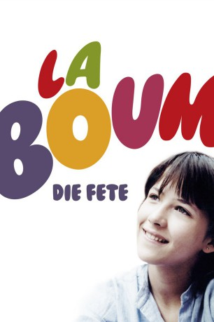
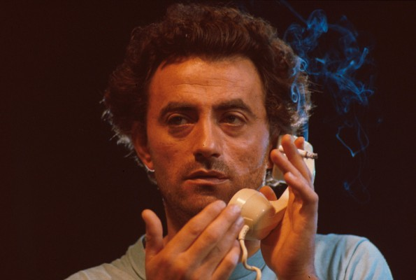
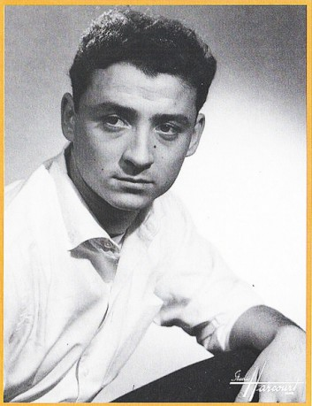

#1270 La Boum - Die Fete
Alternativ: The Party (Englischer Titel)
 
 IMDB-Wertung: 6.7 / 10
IMDB-Wertung: 6.7 / 10  Metascore: 0
Metascore: 0 
Die 13jährige Vic zieht mit ihren Eltern, einem Zahnarzt und einer Comiczeichnerin, nach Paris. Dort findet Vic schnell Freunde, unter anderem Pénélope, die im Gegensatz zu Vic schon Erfahrungen mit Jungs hat, und deren kleine Schwester Samantha. Auf einer Fete findet Vic ihre erste große Liebe, Mathieu, mit dem sie schon nach kurzer Zeit ausgeht. Die Familienidylle zerbricht, als herauskommt, dass Vics Vater eine Affäre mit einer Parfumhändlerin hatte. Wütend trennt sich Vics Mutter vorübergehend von ihm und demoliert aus Rache das Geschäft der Geliebten. Wenig später beginnt sie eine Affäre mit Vics Lehrer.
Jahr: 1980
Dauer: 100 Minuten
FSK: 12
Land: Frankreich Studio: CICTonspuren:
Untertitel:
Auflösung: 1080p (1792x1080) Größe: 11264 MB
Genre: Komödie, Drama, Liebe
Regisseur: Claude Pinoteau
Drehbuch: Danièle Thompson, Claude Pinoteau
Soundtrack: Vladimir Cosma
Darsteller:
- Brigitte Fossey als Françoise Beretton
 Sophie Marceau als Vic Beretton
Sophie Marceau als Vic Beretton-  Richard Bohringer als Guibert
-  Claude Brasseur als François Beretton
- Denise Grey als Poupette
- Jean-Michel Dupuis als Étienne
 Dominique Lavanant als Vanessa
Dominique Lavanant als Vanessa- Bernard Giraudeau als Éric Lehman
- Jacques Ardouin als Père de Raoul
- Evelyne Bellego als Éliane
- Bernard Born als Skating Rink Bouncer
- Jean-Claude Bouillaud als Père Boum 2
- Micheline Bourday als Journaliste 'VSD'
- Florence Brunold als Femme enceinte
- Jean-Pierre Castaldi als Brassac
 Robert Dalban als Serge
Robert Dalban als Serge- Nicole Dehayes als
- Jacqueline Duc als Dame dans le bus
- Michel Lasorne als David
- Robert Le Béal als Colbert
- Gérard Lemaire als Max
- Sylvain Levignac als
- Marie-Laurence als
- Frédéric de Pasquale als Antoine
- Annie Savarin als Madame Leblanc
- Sheila O'Connor als Pénélope Fontanet
- Arielle Sémenoff als Belle-mère de Raoul
- Alexandra Gonin als Samantha Fontanet
- Janine Souchon als La contractuelle
- Alexandre Sterling als Mathieu
- Léon Zitrone als Himself
- Christopher Beaunay als Jean-Pierre
- Alain Beigel als Raoul
- Marianne Berg als
- Laetitia Gabrielli als Joëlle
- Anne Gautier als
- Laurence Gigon als Caroline
- Olivier Gins als Marc
- Pascal Huet als
- Pierre La Cognata als
- Jean-Philippe Léonard als Stéphane
- Christian Namour als
- Laurent N'Diaye als Arnaud
- Virginie Nègre als
- Frédérique Pressmann als Géraldine
- Nathalie Riqué als Lydia
- Vladimir Cosma als Composer in studio , uncredited
- Jacques-Olivier Holzer als Student , uncredited
- Pierre Jean als Père Boum 1 , uncredited
- Laurence Morve als Gilberte Colbert , uncredited
Datei: X:\2-Dilogie(G-M)\La Boum\La Boum - Die Fete (1980, FSK12, 1792x1080).mkv seit 12.06.2015
Festplatte: HD Collection-2(A-Z)-3(A-M)
 Alle Filme aus Gruppe '2-Dilogie(G-M)\La Boum'
Alle Filme aus Gruppe '2-Dilogie(G-M)\La Boum'